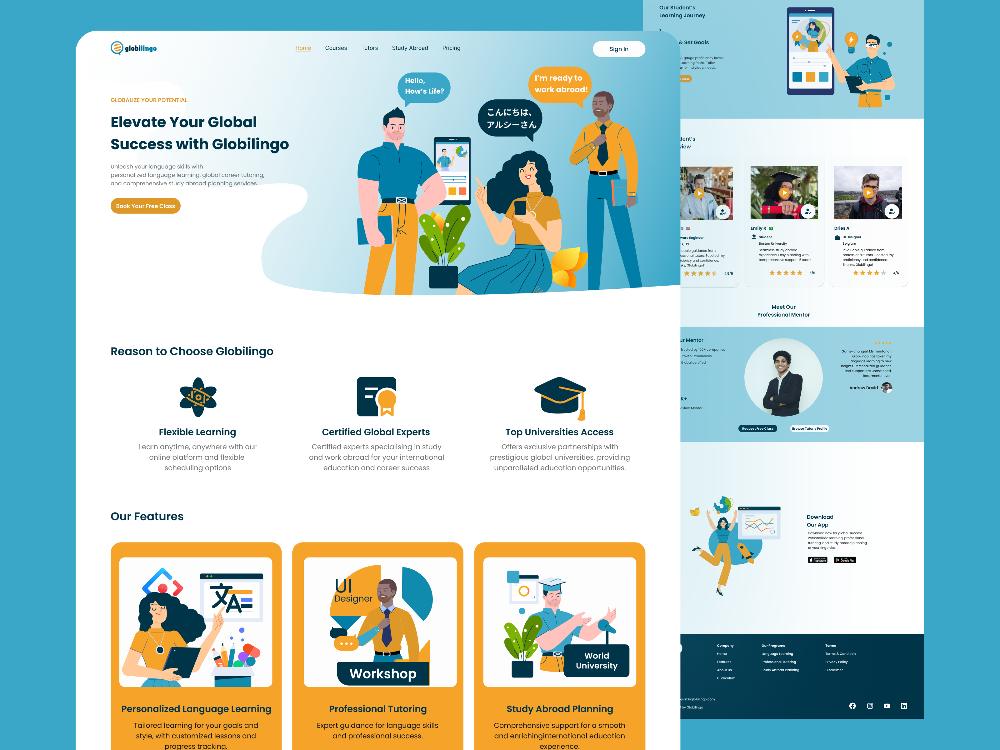
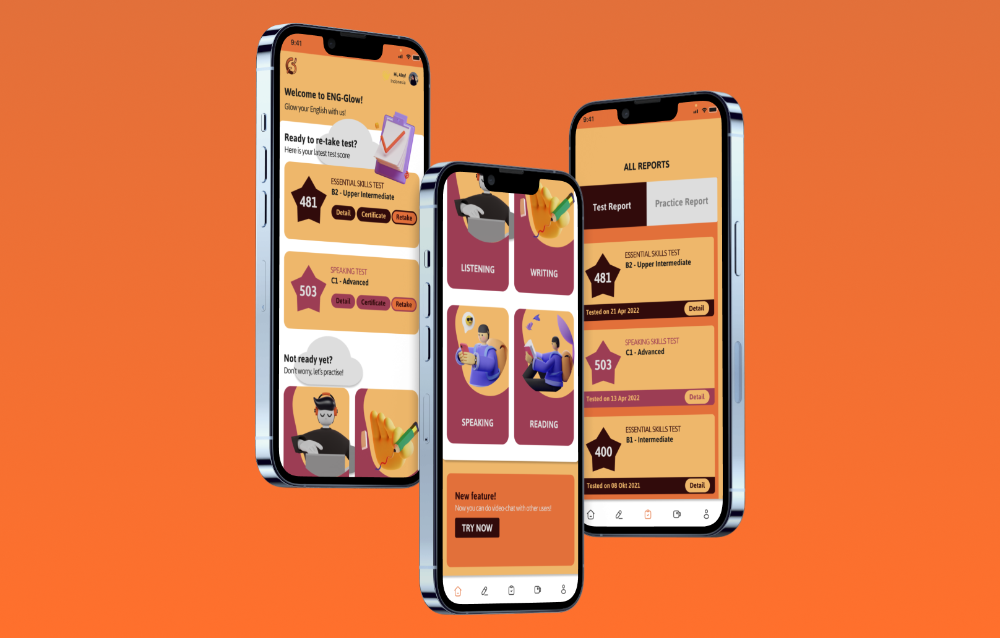

My Project
Explore more about the detail of my UI/UX Design, Android mobile applications, and my thesis projects.
Github User App
GithubUserApp is an app built in Kotlin that implement starter level Android theories. This app is showing some Github user list and each of the user's Github information.
- Displaying data on the application page with a minimum of 10 items.
- Using RecyclerView.
- Displaying avatar and user information on the User Detail page.
- Using Parcelable as the interface for the data objects to be sent between Activities.
- List Items for RecyclerView are arranged using ConstraintLayout.
Find Me On Github
FindMeOnGithub is an app built in Kotlin that implement beginner level Android theories. This app can search everyone's Github user and grab some information regarding name, number of repositories, followers, following, location, and company.
 Here are the specifications of Find Me On Github:
Here are the specifications of Find Me On Github:
-
- Search User, with requirement:
- Displaying a list of user data from the API using RecyclerView with minimum data including avatar photo and username.
- User search using data from the API runs smoothly.
- Users can view the detail page of search results.
-
- Detail User, with requirements:
- There are detailed information about a user, including user's avatar photo, username, name, number of followers and number of followings.
- Display List Follower & List Following fragments taken from the API.
- Use Tab Layout and ViewPager for navigation between List Follower and List Following pages.
-
There is a loading indicator when the application loads data that fetch data from the API
Story App
StoryAppSubmission is an app built in Kotlin that implement intermediate level Android theories. This application is about making stories using camera or gallery with additional such as user login, theme and language setting.
 Here are the specifications of Story App:
Here are the specifications of Story App:
-
- Authentication Page, with requirement:
- A login page to enter the application, that contains email and password.
- A registration page to register in the application, that contains name, email and password.
- Hidden password
- Display an error message directly on the EditText using a custom view if the password length is less than 8 characters on the login or register page.
- Save session data and token in preferences to manage application flow: logged-in users directly enter the main page; otherwise, enter the login page.
- Main page includes a logout feature: pressing the logout button deletes token and session info.
-
- List of Stories (List Story), with requirements:
- Display user's name and photo in the list of stories fetched from the provided API.
- Show detail view upon selecting a story item, displaying user's name, photo, and description.
- Display user's name and photo in the list of stories fetched from the provided API.
-
- Add Story, with requirements:
- Application page displays user's photo (selectable from gallery) and story description as mandatory information.
- The following are the conditions for adding a new story:
- There is a button to upload data to the server.
- After clicking this button and the upload process is successful, it returns to the list of stories page.
- The latest story data appears at the top.
- Application page displays user's photo (selectable from gallery) and story description as mandatory information.
- Display Animation using Property Animation.
- Create a new page displaying a map with markers or icons representing story locations retrieved via the URL parameter: https://story-api.dicoding.dev/v1/stories?location=1
- Paging List using Paging 3.
- Unit test the ViewModel functions retrieving Paging data lists.
Thesis Project
Built with Moodle platform, this thesis project resulted in a product of an Electronic Module (E-module) in the shape of a Learning Management System (LMS) for project-based learning on user interface and user experience, based on the Merdeka Curriculum (the new education curriculum in Indonesia) that can be accessed on the SIBELA e-learning website. The developed E-module serves as a learning resource for students majoring in Software Engineering in grades X and XI at SMK Negeri 4 Malang. This Learning Management System E-module is titled Freelance UI/UX 101: From Concept to Delivery, involving knowledge and strategies to become a freelance UI/UX designer. The learning materials on user interface and user experience include concepts such as basic UX concepts, project brief, UX research with design thinking framework, moodboard, wireframe, basic elements and principles of visual design, mockup, prototyping, testing, and personal branding as a UX designer. These learning materials follow a project-based learning concept with instructions provided for each step of the material, leading to a final design project.
 Here are the detailed steps in the lessons development of the electronic module:
Here are the detailed steps in the lessons development of the electronic module:
- Basic UX Concepts, covering various basic UX materials such as introduction to UX design, characteristics of quality UX design, types of UX designer careers, and introduction to the Design Thinking approach.
- Project Brief, containing explanations of real example design project guidelines as if given by a client to a designer. The author explains the contents and meanings of the parts of the project brief, which are then used in the design project guidelines for the Globilingo website by students.
- UX Research with Design Thinking Framework, covering the steps in the design thinking approach. The author explains the steps that UX designers need to take before designing UX design. These steps include empathizing, defining, and ideating, and applying them to the practice of designing the Globilingo website.
- Moodboard, emphasizing the importance of seeking design inspiration from expert designers so that participants can apply the ATM method (Observe, Imitate, and Modify).
- Wireframe, which is an outline framework of an application or website design to identify layout arrangement, information architecture, flow of an application, functionality, and user behavior desired. Wireframing is the activity of creating wireframes. With wireframes, a UI designer can more easily design a mockup and this can also serve as a means of communication with stakeholders to approve information placement.
- Basic Elements and Principles of Visual Design in Mockups, which are things to consider in creating a visual design, including a user interface design. These basic elements and principles of visual design are applied so that a product looks attractive, adheres to visual design principles, and facilitates users in using the product. The basic elements in visual design in this E-module include discussions of color, iconography, and typography. While the basic principles of visual design to be discussed include emphasis, hierarchy, proportion, unity, and variety.
- Mockup, which is a concept deeper than wireframe, containing various aspects of visual design, such as coloring in the user interface design, use of typography, and inclusion of images with more detailed views.
- Prototyping, a concept that can turn a static mockup design into a dynamic (clickable) design, thus illustrating how users interact with the interface more clearly (Dicoding Intern, 2021).
- Testing, a concept for testing product designs and seeing if there are any improvements needed in the designs.
- Personal branding as a UX designer, a step forward in becoming a UX designer. In this step, the author explains how to showcase work to attract clients.
Globilingo Landing Page Design
The Globilingo landing page showcases three main features: Personalized Language Learning, Study, and Work Abroad Planning. Information about courses, curricula, testimonials, and teacher qualifications is also presented. This page is appealing to students, university students, and professionals who wish to take language courses or continue their studies and work abroad. This project is initially done through doing user research for resulting user interface design of Globilingo.
The document provides a comprehensive overview of the design process for a landing page on Globilingo, a platform offering language learning and mentorship services. It delves into user research, the development of user personas like Givar Hanaan, and the identification of key problem statements to address user needs effectively. The project timeline, responsibilities, and key features of the landing page are outlined, emphasizing the importance of creating an engaging and user-friendly website design. The document also highlights the iterative nature of the design process, including brainstorming sessions, wireframes, prototypes, and usability testing to ensure a seamless user experience.
Furthermore, the document details the specific steps taken to enhance the landing page design, such as conducting usability studies to gather insights for design modifications. It emphasizes the significance of creating a website that fosters meaningful mentor connections and supports language learners effectively.
The goal statement underscores the aim of making the platform easy to understand, engaging, and trustworthy for users seeking language learning and mentorship opportunities. The document concludes by outlining next steps, including further design enhancements and usability testing to tailor the landing page specifically for language enthusiasts and individuals seeking mentorship interactions on the Globilingo platform.
Eng-Glow App Design
The English language test and exercise application, ENG-Glow, offers a valuable tool for students preparing for English exams or seeking to enhance their problem-solving skills through online practice. The app's attractive UI design and interactive features aim to elevate the user learning experience.
The project, running from April 14th to May 11th, 2022, addresses common issues in existing English language apps, such as lackluster UI designs, limited question variety, and uninspiring user interactions. The goal is to assist users in exam preparation and improve their English learning journey. As the UI/UX designer, the responsibilities included extensive research, user flow development, wireframing, mockup designing, prototyping, and testing. The research method involved engaging users via WhatsApp to understand their expectations and concerns regarding English exam apps. Findings indicated users' dissatisfaction with UI designs, lack of interactive features, limited question variety, and absence of engaging interactions.
A user persona, Rosalina Wijayanti, highlighted the need for varied questions, error-free content, and engaging features. The competitive analysis revealed shortcomings in menu visibility and multilingual support among rivals. The goal was to offer an enjoyable, educational experience for English learners through a user-friendly interface. The high-fidelity prototype aimed to provide accessible practice materials, engaging English speaking practice, and accurate proficiency assessment.
The usability study identified the need for background patterns, user options for communication preferences, and motivational elements. Lessons learned emphasized the significance of thorough research and user validation throughout the design process. Future plans include adding audio elements for enhanced user experience and further design iterations based on user feedback.